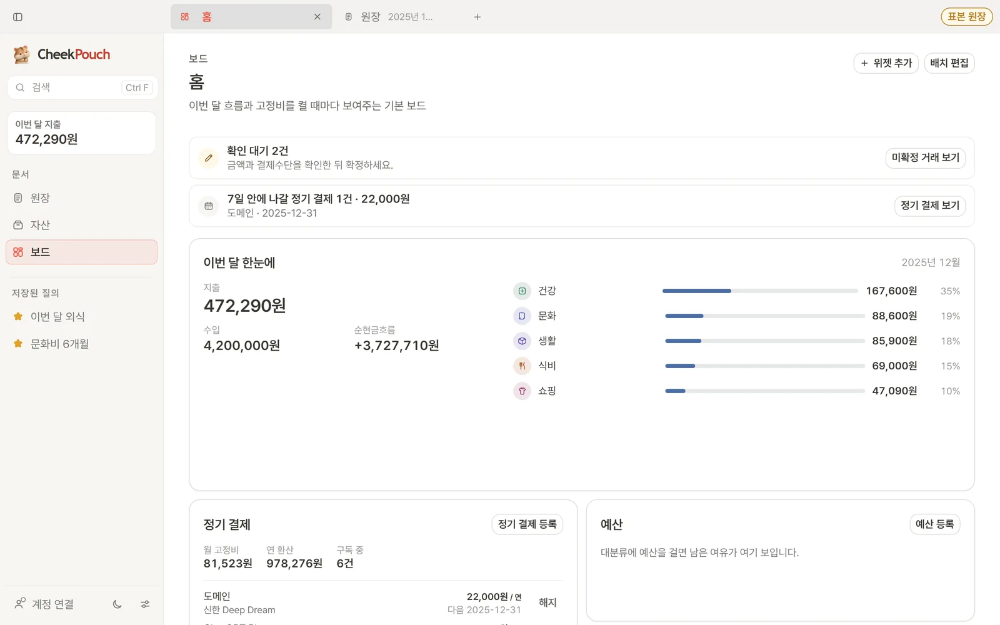
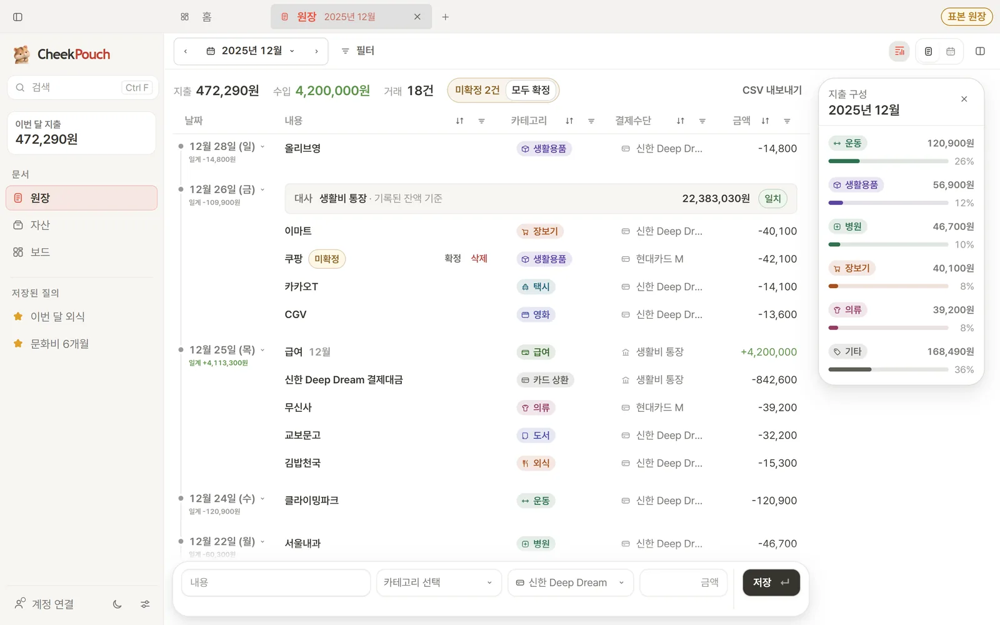
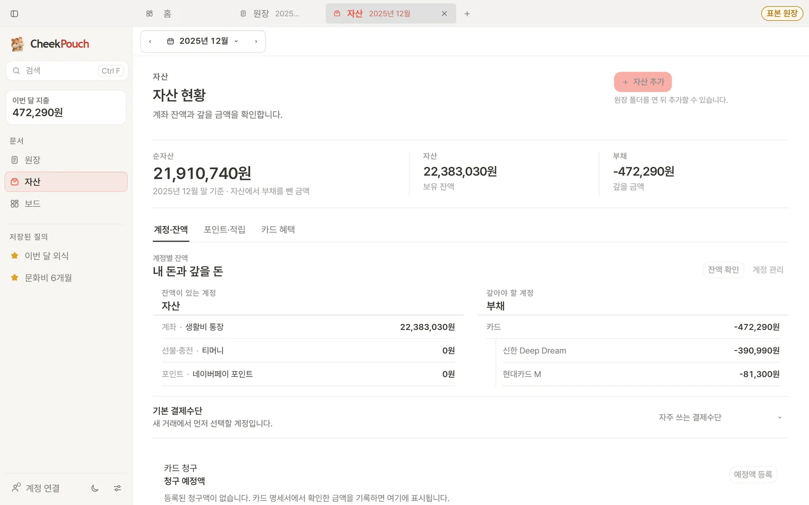
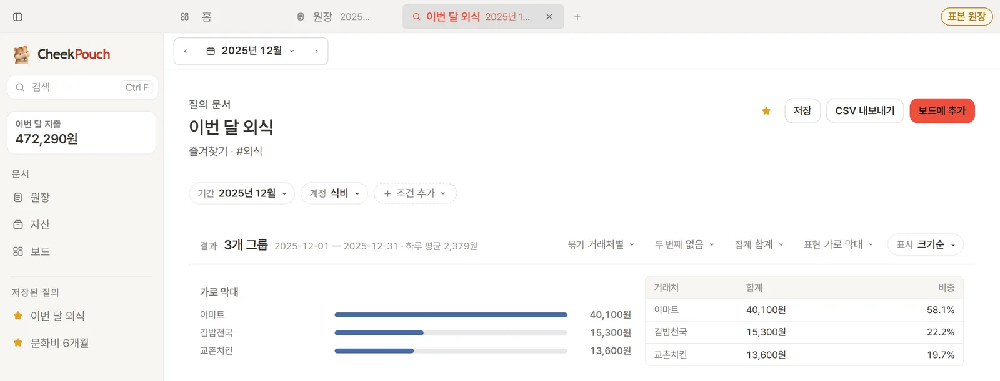
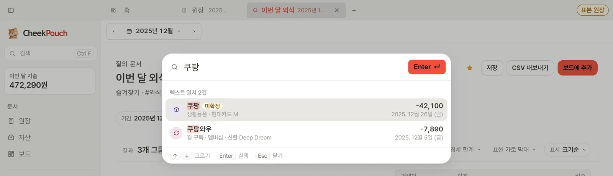

LOCAL-FIRST LEDGER · ALPHA
내 돈의 기록은
내 기기 안에.
CheekPouch(볼주머니)는 지출과 자산을 기록하고 한눈에 보여주는 개인 가계부입니다. 서버 계정은 필요 없습니다.
화면으로 둘러보기01 · 보드
이번 달을 한눈에
확인할 거래와 7일 안의 정기 결제를 맨 위에 올려 두고, 이번 달 지출·수입·순현금흐름과 카테고리별 비중을 보여줍니다.

02 · 원장
날짜별로 쌓이는 기록
거래는 날짜별로 묶이고 카테고리와 결제수단이 붙습니다. 아직 확인하지 않은 거래는 “미확정”으로 따로 표시되고, 오른쪽 패널에서 이번 달 지출 구성을 바로 봅니다. 새 기록은 맨 아래 입력행에서 한 줄로 남깁니다.

03 · 자산
순자산과 계좌 잔액
자산에서 부채를 뺀 순자산과 계좌·카드별 잔액을 한 화면에서 확인합니다. 포인트·적립과 카드 혜택은 탭으로 나뉘어 있습니다.

04 · 묻고 찾기
조건으로 묻고, 글자로 찾기
질의 문서는 기간과 계정 조건으로 거래를 묶어 막대와 표로 보여줍니다. 검색(Ctrl F)은 인터넷 없이 텍스트 일치로 동작합니다.
온라인 AI 분석(Jev)은 선택 기능이며 승인된 계정에서만 켤 수 있습니다.


YOUR DATA
보관은 내가 정합니다
-
내가 고른 폴더의 원장
원장은 원장 비밀번호로 암호화되어 저장됩니다. 언제든 표준 beancount 텍스트로 내보낼 수 있어 CheekPouch를 떠나도 데이터가 남습니다.
-
선택하는 Google 백업
Google 로그인은 선택입니다. 연결하면 앱 전용 Google Drive 공간에 암호화된 백업을 두고 기기 사이에 동기화합니다.
자세한 처리 방식은 개인정보처리방침에서 확인할 수 있습니다.
INSTALL
설치하기
최신 alpha 버전의 정보입니다. 내려받기는 상단의 다운로드 버튼에서 합니다.
Windows 최신 버전
최신 버전은 GitHub Releases에서 확인하세요.
SHA-256 / 서명 안내
SHA-256
시스템 요구 사항 Windows 10 / 11 · 64비트(x64)
-
다운로드
상단의 다운로드 버튼으로 설치 파일을 받습니다.
-
설치 마법사 실행
내려받은 파일을 열고 안내에 따라 설치합니다.
-
첫 실행 시 원장 폴더 선택
기존
.beancount폴더를 열거나 빈 폴더에 기본 계정 체계를 만들 수 있습니다.
alpha 설치 파일은 Windows에서 “알 수 없는 게시자” 또는 “Windows의 PC 보호” 경고를 보여줄 수 있습니다. 파일을 이 페이지의 GitHub Releases에서 받았는지 확인한 뒤, 경고 창의 추가 정보를 눌러 실행을 선택하세요. 출처가 확실하지 않은 파일은 실행하지 마세요.
Android 앱은 Google Play 출시를 준비 중입니다.